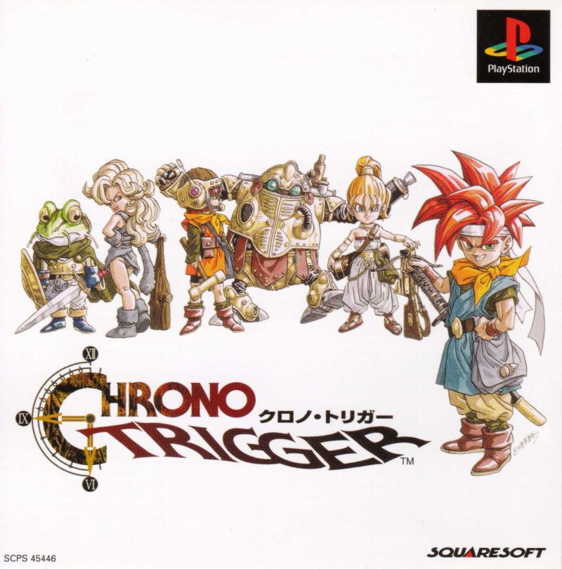
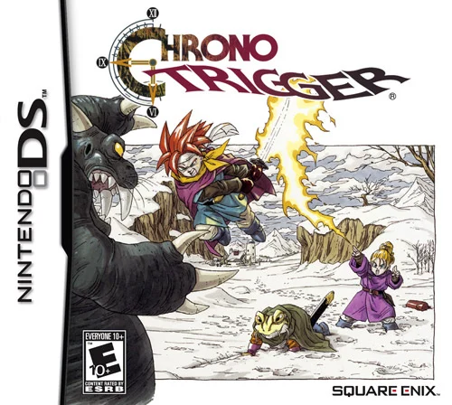

Chrono Trigger Media
Here you can listen to some samples of music from the game as well as view the special animated cutscenes from the Playstation One release
Chrono Trigger Audio
Opening Theme
Fight Music
Final Boss Music
Chrono Trigger Video
Opening
Various Cutscenes
Ending
Chrono Trigger Media
On this page, listen to some music from the game and view the special cutscenes that were added with the Playstation One release!
 Listen Here!
Chrono Trigger Blog
Keep up with my wife and I as I guide her through her first playing experience!
 Keep Up!